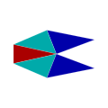
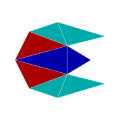

← Zum Spiel
USI - STAR FLEET
Spielanleitung für neue Spieler
Spielziel
Du bist der Führer einer Fraktion im Weltraum. Dein Ziel:
alle Planeten erobern und alle feindlichen Schiffe vernichten.
Es gibt 10 Planeten und 3 Fraktionen. Du wählst eine Fraktion am Anfang.
Die anderen beiden werden vom Computer gesteuert.
- Sieg: Keine feindlichen Sektoren und keine feindlichen Schiffe mehr vorhanden.
- Niederlage: Du besitzt keine Sektoren und hast keine Schiffe mehr.
Jede Fraktion kann maximal 85 Schiffe gleichzeitig besitzen.
Steuerung
Maus
| Linksklick + Ziehen | Schiffe markieren (Box-Auswahl) |
| Linksklick (ohne Ziehen) | Einzelnes Schiff markieren oder Deselektieren |
| Rechtsklick mit markierten Schiffen | Bewegungsbefehl: auf Planet = dorthin landen, ins Freie = dorthin fliegen |
| Rechtsklick ohne markierte Schiffe | Auswahl aufheben |
| Klick auf Mini-Map | Kamera zum gewählten Bereich bewegen |
| Kamera-Slider (rechts) | Kamerawinkel ändern (0° = von oben, 90° = perspektivisch) |
Tastatur im Spiel
| 1 - 8 | Schiffegruppe auswählen (alle Schiffen in dieser Gruppe werden markiert) |
| !, ", #, $, %, &, /, ( | Markierte Schiffe einer Gruppe zuweisen (nur mit markierten Schiffen) |
| P | Pause an/aus |
Planetenmenü-Tasten
Öffne das Planetenmenü, indem du auf einen Planeten klickst, den du besitzt.
| 1 | Nächstes Level bauen (erweitert Planet um einen Sektor) |
| 2 | Soldaten produzieren |
| 3 | Jäger bauen (benötigt mind. 2 Sektoren) |
| 4 | Transporter bauen (benötigt mind. 3 Sektoren + 100 Soldaten) |
| 5 | Fortgeschrittener Jäger (benötigt mind. 4 Sektoren) |
| 6 | Forts bauen (benötigt mind. 5 Sektoren) |
| 7 | Bomber bauen (benötigt mind. 6 Sektoren) |
| 8 oder C | Aktuellen Produktionsauftrag abbrechen |
| W oder 9 | Infanterie-Modus umschalten: Angriff → Verteidigung (nur für Bodentruppen auf diesem Planeten) |
| Mausklick auf „zurück“ | Planetenmenü schließen |
Einheiten & Schiffe
Schiffe werden auf deinen Planeten produziert und agieren automatisch im Weltall:
Kampfschiffe jagen und beschießen feindliche Schiffe in der Nähe,
und Transporter landen auf Planeten, um Soldaten zu landen und Sektoren zu erobern.
Kampfschiffe
Kampfschiffe (Typ 1–9) greifen feindliche Schiffe automatisch an, wenn sie in Reichweite sind.

Jäger
Schnelles Kampfflugzeug. Hohe Feuerrate (10 Schüss/sec), aber niedriger Einzelschaden und 75% Trefferquote. Geringe Panzerung.

Fortg. Jäger
Ausgeglichener Kampfflugzeug. Mittlere Feuerrate (7,5 Schüss/sec), 80% Trefferquote, mittlere Panzerung.

Fortg. Jäger
Ausgeglichener Kampfflugzeug. Mittlere Feuerrate (7,5 Schüss/sec), 80% Trefferquote, mittlere Panzerung.

Fortg. Jäger
Ausgeglichener Kampfflugzeug. Mittlere Feuerrate (7,5 Schüss/sec), 80% Trefferquote, mittlere Panzerung.
Elite Jäger
Schnelles Kampfflugzeug. Hohe Feuerrate (10 Schüss/sec), 75% Trefferquote, geringe Panzerung.
Elite Jäger
Schnelles Kampfflugzeug. Hohe Feuerrate (10 Schüss/sec), 75% Trefferquote, geringe Panzerung.

Bomber
Schweres Schiff. Geringe Feuerrate (4,3 Schüss/sec), aber hohe Trefferquote (90%) und hoher Einzelschaden. Starke Panzerung, aber langsam.
Fortg. Bomber
Schweres Schiff. Geringe Feuerrate (4,3 Schüss/sec), hohe Trefferquote (90%) und hoher Einzelschaden. Starke Panzerung, langsam.

Elite Bomber
Schwerstes Kampfflugzeug. Geringe Feuerrate (4,3 Schüss/sec), hohe Trefferquote (90%) und sehr hoher Einzelschaden. Sehr starke Panzerung, langsam.
Transporter
Transporter (Typ 10–12) transportieren 100 Soldaten zum Zielplaneten.
Wenn sie landen, werden die Soldaten auf dem Planeten zugewiesen und Sektoren erobern.
Transporter benötigen 100 Soldaten zum Bauen (werden vom Planeten abgezogen).

Transporter
Transportiert 100 Soldaten zum Zielplaneten und landet sie dort.

Fortg. Transporter
Transportiert 100 Soldaten zum Zielplaneten und landet sie dort.
Elite Transporter
Transportiert 100 Soldaten zum Zielplaneten und landet sie dort.
Gegeneinander (Stein-Schere-Papier)
Verschiedene Schiffstypen haben Vorteile und Nachteile gegeneinander:
Jäger
→ +40% Schaden gegen
Bomber
Bomber
→ +50% Schaden gegen
Transporter
Transporter
→ +35% Schaden gegen
Jäger
Fortgeschrittene Jäger: +25% gegen Bomber, –10% gegen Transporter
Zusätzlich:
- Schnellere Schiffe sind schwerer zu treffen (3% weniger Trefferquote pro 10 Geschwindigkeitseinheiten Unterschied).
- Jäger feuern sehr schnell (10 Schüss/sec), aber mit 75% Trefferquote.
- Bomber feuern langsam (4,3 Schüss/sec), haben aber 90% Trefferquote und hohen Schaden.
- Schilde regenerieren sich langsam im Laufe der Zeit.
Planetenbau
Klicke auf einen Planeten, den du besitzt, um das Planetenmenü zu öffnen.
Dort kannst du produzieren und die Infanterie verwalten.
Voraussetzungen für Produktion
Jede Einheit benötigt eine bestimmte Anzahl besetzter Sektoren auf dem Planeten:
| Befehl | Voraussetzung | Beschreibung |
|---|
| Taste 1 | Weniger als 8 Sektoren | Erweitere Planeten um einen Sektor |
| Taste 2 | Infanterie-Kapazität noch nicht erreicht | Soldaten produzieren (max. Sektoren × 200) |
| Taste 3 | Mind. 2 Sektoren | Jäger bauen |
| Taste 4 | Mind. 3 Sektoren + 100 Soldaten | Transporter bauen (Soldaten werden abgezogen) |
| Taste 5 | Mind. 4 Sektoren | Fortgeschrittener Jäger |
| Taste 6 | Mind. 5 Sektoren | Forts bauen (erhöhen Infanterie-KampfStärke im Verteidigungsmodus) |
| Taste 7 | Mind. 6 Sektoren | Bomber bauen |
Infanterie-Modus (Taste W)
Auf jedem Planeten, den mehrere Fraktionen gleichzeitig besetzen, kämpfen die
Bodentruppen gegeneinander. Der Infanterie-Modus bestimmt, wie deine Soldaten dabei agieren:
- Angriff — Soldaten kämpfen aggressiv (KampfStärke = Soldaten × Lebensbedingungen-Faktor)
- Verteidigung — Soldaten kämpfen defensiv (+25% Bonus + 25 Punkte pro Fort)
Achtung: Dieser Modus betrifft nur die Infanterie auf dem Planeten,
nicht die Schiffe im Weltall. Schiffe greifen feindliche Schiffe immer automatisch an.
Planetenverteidigung
Wenn du alle 8 Sektoren eines Planeten besitzt:
- Ab 7 Sektoren: Der Planet verfügt über Abfangraketen gegen feindliche Schiffe.
- Bei 8 Sektoren: Zusätzlicher Schutzschild (mit begrenzten HP) und mehr Raketen.
Eroberung durch Transporter
- Baue Soldaten auf deinem Planeten.
- Baue einen Transporter (benötigt 100 Soldaten + mind. 3 Sektoren).
- Markiere den Transporter und klicke mit der rechten Maustaste auf den Zielplaneten.
- Der Transporter fliegt dorthin und landet 100 Soldaten.
- Wenn mehrere Fraktionen denselben Planeten besetzen, kämpfen die Soldaten gegeneinander.
- Die Fraktion mit der höheren KampfStärke gewinnt und die unterlegene verliert Soldaten.
Tipps für den Anfang
- Produziere zuerst Soldaten und baue deinen Planeten auf (mehr Sektoren = mehr Produktionsmöglichkeiten).
- Baue früh Jäger, um deine Gebiete vor feindlichen Schiffen zu schützen.
- Transporter sind der einzige Weg, um neue Planeten zu erobern — baue sie sobald du genug Sektoren und Soldaten hast.
- Ein Planet mit keinem aktiven Produktionsauftrag hat 25% mehr Infanterie-KampfStärke.
- Im Verteidigungsmodus mit Forts sind deine Bodentruppen Stärker — nutze das auf wichtigen Planeten.
- Vergiss nicht, die W-Taste zu nutzen, um zwischen Angriff und Verteidigung zu wechseln.
- Gruppieren Sie Schiffe mit den Tasten 1-8 für schnelle Auswahl.
- Speichere häufig über den Save-Button rechts!
Viel Spaß beim Spielen!
USI - Star Fleet | Ein klassisches Weltraumstrategiespiel
← Back to game
USI - STAR FLEET
Player guide for new players
Game goal
You are the leader of a faction in space. Your goal:
conquer all planets and destroy all enemy ships.
There are 10 planets and 3 factions. You choose a faction at the start.
The other two are controlled by the computer.
- Victory: No enemy sectors and no enemy ships left.
- Defeat: You own no sectors and have no ships left.
Each faction can own at most 85 ships at a time.
Controls
Mouse
| Left click + drag | Select ships (box selection) |
| Left click (without dragging) | Select a single ship or deselect |
| Right click with selected ships | Movement order: onto a planet = land there, into open space = fly there |
| Right click without selected ships | Clear selection |
| Click on mini-map | Move camera to the chosen area |
| Camera slider (right) | Change camera angle (0° = top-down, 90° = perspective) |
Keyboard in game
| 1 - 8 | Select a ship group (all ships in that group are selected) |
| !, ", #, $, %, &, /, ( | Assign selected ships to a group (only with selected ships) |
| P | Pause on/off |
Planet menu keys
Open the planet menu by clicking on a planet you own.
| 1 | Build next level (expands planet by one sector) |
| 2 | Produce soldiers |
| 3 | Build fighters (requires at least 2 sectors) |
| 4 | Build transporters (requires at least 3 sectors + 100 soldiers) |
| 5 | Advanced fighter (requires at least 4 sectors) |
| 6 | Build forts (requires at least 5 sectors) |
| 7 | Build bombers (requires at least 6 sectors) |
| 8 or C | Cancel current production order |
| W or 9 | Toggle infantry mode: attack → defense (only for ground troops on this planet) |
| Mouse click on "back" | Close planet menu |
Units & ships
Ships are produced on your planets and act automatically in space:
combat ships hunt and shoot nearby enemy ships,
and transporters land on planets to land soldiers and conquer sectors.
Combat ships
Combat ships (types 1–9) attack enemy ships automatically when in range.
Fighter
Fast combat craft. High fire rate (10 shots/sec), but low per-shot damage and 75% hit chance. Low armor.
Adv. Fighter
Balanced combat craft. Medium fire rate (7.5 shots/sec), 80% hit chance, medium armor.
Adv. Fighter
Balanced combat craft. Medium fire rate (7.5 shots/sec), 80% hit chance, medium armor.
Adv. Fighter
Balanced combat craft. Medium fire rate (7.5 shots/sec), 80% hit chance, medium armor.
Elite Fighter
Fast combat craft. High fire rate (10 shots/sec), 75% hit chance, low armor.
Elite Fighter
Fast combat craft. High fire rate (10 shots/sec), 75% hit chance, low armor.
Bomber
Heavy ship. Low fire rate (4.3 shots/sec), but high hit chance (90%) and high per-shot damage. Strong armor, but slow.
Adv. Bomber
Heavy ship. Low fire rate (4.3 shots/sec), high hit chance (90%) and high per-shot damage. Strong armor, slow.
Elite Bomber
Heaviest combat craft. Low fire rate (4.3 shots/sec), high hit chance (90%) and very high per-shot damage. Very strong armor, slow.
Transporters
Transporters (types 10–12) carry 100 soldiers to the target planet.
When they land, the soldiers are assigned to the planet and conquer sectors.
Transporters require 100 soldiers to build (taken from the planet).
Transporter
Transports 100 soldiers to the target planet and lands them there.
Adv. Transporter
Transports 100 soldiers to the target planet and lands them there.
Elite Transporter
Transports 100 soldiers to the target planet and lands them there.
Matchups (rock-paper-scissors)
Different ship types have advantages and disadvantages against each other:
Fighter
→ +40% damage against
Bomber
Bomber
→ +50% damage against
Transporter
Transporter
→ +35% damage against
Fighter
Advanced fighters: +25% against bombers, –10% against transporters
In addition:
- Faster ships are harder to hit (3% lower hit chance per 10 units of speed difference).
- Fighters fire very fast (10 shots/sec), but with 75% hit chance.
- Bombers fire slowly (4.3 shots/sec), but have 90% hit chance and high damage.
- Shields regenerate slowly over time.
Planet building
Click on a planet you own to open the planet menu.
There you can produce units and manage the infantry.
Production requirements
Each unit requires a certain number of occupied sectors on the planet:
| Command | Requirement | Description |
|---|
| Key 1 | Fewer than 8 sectors | Expand planet by one sector |
| Key 2 | Infantry capacity not reached yet | Produce soldiers (max. sectors × 200) |
| Key 3 | At least 2 sectors | Build fighters |
| Key 4 | At least 3 sectors + 100 soldiers | Build transporters (soldiers are deducted) |
| Key 5 | At least 4 sectors | Advanced fighter |
| Key 6 | At least 5 sectors | Build forts (increase infantry combat strength in defense mode) |
| Key 7 | At least 6 sectors | Build bombers |
Infantry mode (key W)
On every planet occupied by several factions at the same time, the
ground troops fight each other. The infantry mode determines how your soldiers act:
- Attack — Soldiers fight aggressively (combat strength = soldiers × living-conditions factor)
- Defense — Soldiers fight defensively (+25% bonus + 25 points per fort)
Note: This mode only affects the infantry on the planet,
not the ships in space. Ships always attack enemy ships automatically.
Planet defense
If you own all 8 sectors of a planet:
- From 7 sectors: The planet has interceptor rockets against enemy ships.
- With 8 sectors: Additional shield (with limited HP) and more rockets.
Conquest by transporter
- Build soldiers on your planet.
- Build a transporter (requires 100 soldiers + at least 3 sectors).
- Select the transporter and right-click the target planet.
- The transporter flies there and lands 100 soldiers.
- If several factions occupy the same planet, the soldiers fight each other.
- The faction with the higher combat strength wins and the losing one loses soldiers.
Tips for beginners
- Produce soldiers first and build up your planet (more sectors = more production options).
- Build fighters early to protect your territory from enemy ships.
- Transporters are the only way to conquer new planets — build them as soon as you have enough sectors and soldiers.
- A planet with no active production order has 25% more infantry combat strength.
- In defense mode with forts your ground troops are stronger — use that on important planets.
- Don't forget to use the W key to switch between attack and defense.
- Group ships with keys 1-8 for quick selection.
- Save often using the Save button on the right!
Have fun playing!
USI - Star Fleet | A classic space strategy game